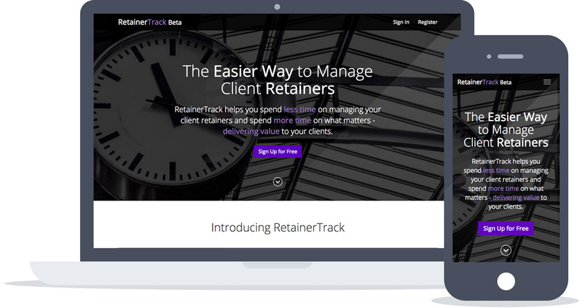

  <div class="container main container-pad">
    <div class="col-8-12">
      <h1>{{ page.title }}</h1>
      <p>I'm working my way through my recent projects to show here, so please bear with me - I'll update as quickly I can.</p>

      <h2>RetainerTrack</h2>
      <p>This <a href="http://retainertrack.com/" alt="RetainerTrack">retainer management</a> tool is something I built with a friend of mine for a small design agency, which we've now opened up to the general public. It helps you manage your client retainers easily and quickly, tracking your time and automatically emailing your clients at the end of each month with the tasks that have been worked through. So far, it's been received quite well, but we're still developing so welcome any ideas for improvement. It's built using <a href="https://www.meteor.com/" alt="Meteor JS Framework">Meteor</a> and the design and front end was completed by myself.</p>
      
    </div>

    {% include sidebar.html %}

  </div>
